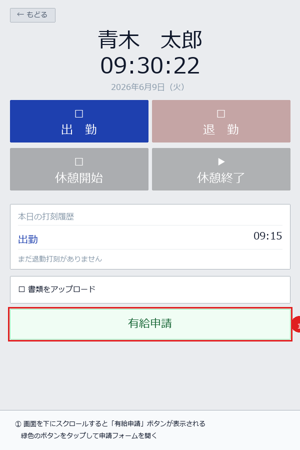
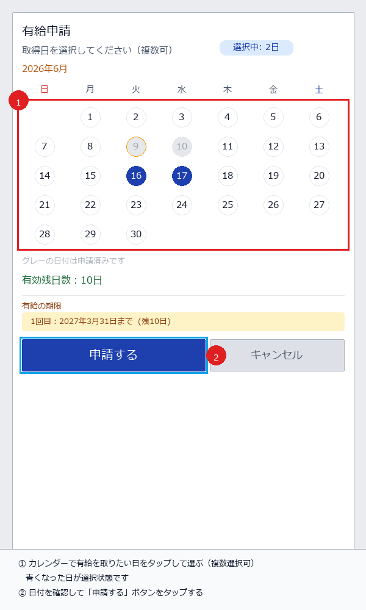
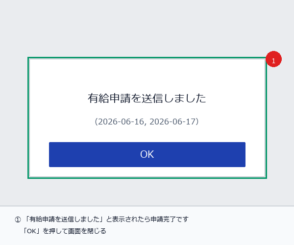

STEP 1 – 2
有給申請ボタンを開いて日付を選択する
STEP
1
打刻画面を下にスクロールして「有給申請」ボタンをタップ
有給申請フォームを開く

1
ログインすると打刻画面が表示されます。画面を
下にスクロール
してください。
2
緑色の
有給申請
ボタンが表示されます。タップすると申請フォームが開きます。
ボタンが表示されない場合：
有給残日数が0日か管理者が付与していません。管理者にご連絡ください。
STEP
2
カレンダーで取得日を選択する
日付の選択（複数可）

1
有給を取りたい日
をタップして選択します。選んだ日が
青く
なります。複数日まとめて選択できます。
—
グレー
の日付はすでに申請済みで選択できません。
2
「有効残日数」と「有給の期限」を確認してから
申請する
をタップします。
注意：
申請できるのは
当月内の日付のみ
です。翌月分は翌月になってから申請してください。
STEP 3 – 4 & 注意事項
申請の送信・状態確認・注意事項
STEP
3
「申請する」を押して送信

1
「
有給申請を送信しました
」と表示されたら完了です。
2
OK
をタップして閉じます。
!
承認されるまでは
確定ではありません
。
STEP
4
申請後の状態を確認する
ステータス
意味・次のアクション
申請中
管理者が確認待ち。そのままお待ちください。
承認済み
有給取得が確定しました。
却下
管理者に理由を確認してください。
取消済み
必要なら再申請してください。
📅 当月内のみ申請可
翌月分は翌月に申請。
📊 残日数不足は申請不可
管理者に残日数を確認。
⏳ 承認まで確定ではない
早めに申請しましょう。
📞 間違えたら管理者へ
取消はスタッフ不可。
よくある質問 Q&A
Q
有給申請ボタンが表示されない
A
残日数が0日または期限切れです。管理者に「有給付与がされているか」確認してください。
Q
間違えた日付で申請してしまった
A
スタッフ側からの取消はできません。管理者に「申請の取消」を依頼してください。
Q
PINを忘れてしまった
A
管理者にPINリセットを依頼してください。再ログイン時に新しいPINを設定できます。
Q
「申請中」のまま長時間変わらない
A
管理者がまだ確認していない可能性があります。急ぎの場合は管理者に直接連絡してください。